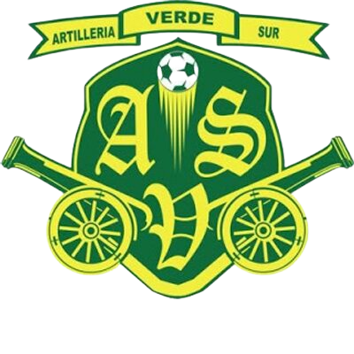

ARTILLERÍA VERDE SUR
HISTORIA
A mediados del mes de junio de 2001 en Montenegro, cuando el Quindío participaba en la segunda división del futbol Colombiano, dos jóvenes que sentían una gran pasión hacia el Deportes Quindío decidieron crear una barra que alentara los 90 minutos del partido, esta se fundo con la mentalidad de ser fuera de lo normal, teniendo un estilo único y original.
A pesar de las dificultades en ese entonces del Deportes Quindío, la hinchada aumentaba cada vez más y sin importar los resultados Artillería Verde Sur siempre hacia presencia en el Estadio Centenario. Hicieron sus primeros viajes, y la hinchada empezó a ser reconocida a nivel nacional pues el aguante que tenía durante los 90 minutos de juego era único.
Y Artillería Verde Sur no solo destaca entre las barras bravas si no que también ha formado una gran comunidad que apoya mucho al Departamento del Quindío pues en cuanto lo social la barra siempre está presente en el día de los niños, en Halloween, día de las madres, ha hecho presencia en protestas, la hinchada se ha convertido en un simbolo del eje cafetero.
Al día de hoy existen grupos en la banda tales que La Isabela, La Milagrosa, Los Wander, K-8, K-4 Los Quindos, 19 D'ENERO, La Voz del Aguante, entre muchos otros.